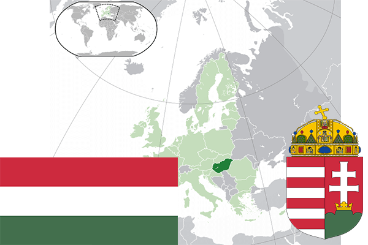

To`liq nomi: Vengriya
Region: Markaziy Yevropa
Qonunchilik shakli: Respublika
Mustaqillik kuni:
Poytaxt: Budapesht
Maydoni: 93 036 km² (dunyoda 108 -o`rinda )
Chegaradosh davlatlari: Slovakiya, Ukraina, Ruminiya, Serbiya, Xorvatiya, Sloveniya, Avstriya
Aholisi: 9 809 004 (dunyoda 89 - o`rinda, 2016 -yil roʻyxat)
Aholi zichligi: 106 /km²
Aholining o`rtacha yoshi: 73,5 yil (77,4 ayollar, 68,7 erkaklar)
Rasmiy tili: venger tili
Dini: 67% katolik, 25% protestant va iudistlar
Pul birligi: Vengriya forinti
Telefon prefiksi: +36
Internet domen: .hu
Xalqaro tashkilotlarga a`zoligi: BMT (1955 – yildan), Yevropa Ittifoqi (2004-yildan), Shimoliy Atlantika Shartnomasi (1999-yildan)
Dengiz va okeanlarga chiqishi: yo`q
YIM: Butun: $ 242 mlrd Jon boshiga $ 24 498 (2004 - yil roʻyxati)
Yirik shaharlari: Budapesht, Debretsen, Mishkolts, Seged, Pech, Dyor.